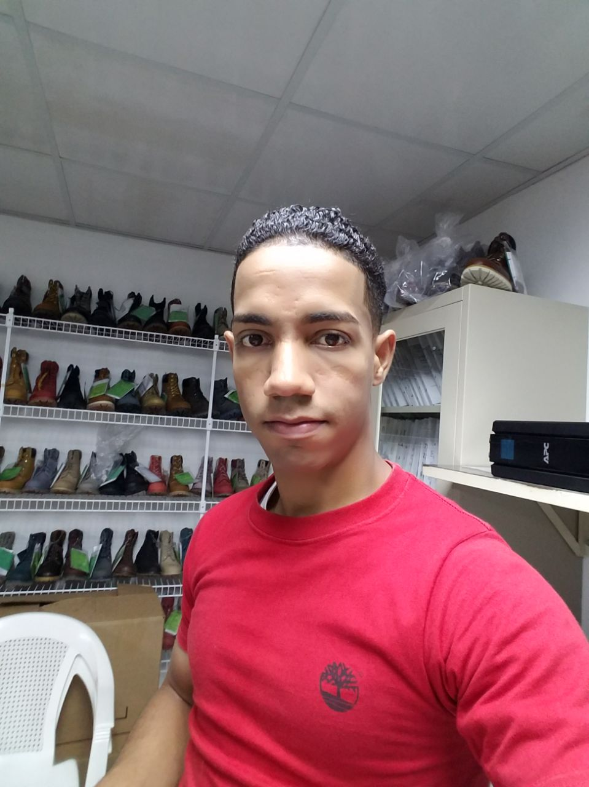
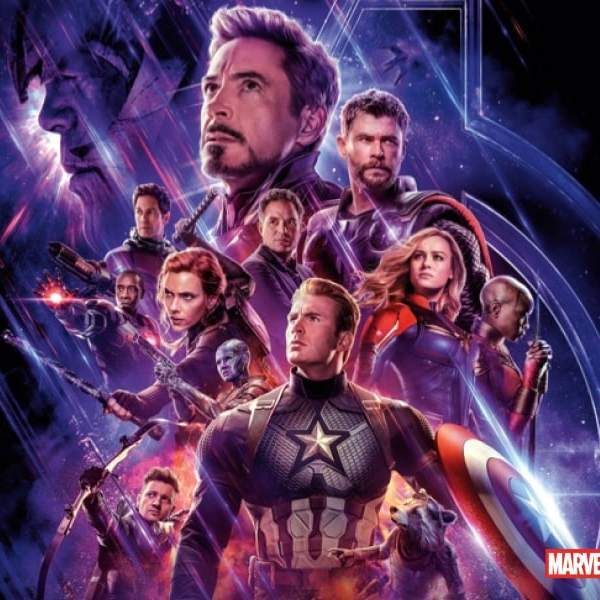
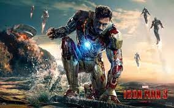

Ramón Manuel Minaya Rodríguez
Datos Generales
Cedula: 402-2324736-8
Dirección: Calle #12, Edificio #6, Apartamento 2-B, Ensanche Mella II, Santiago Oeste.
Telefono: 809-843-9083
Fecha de nacimiento: 14/12/1993
Email: rminaya9083@gmail.com
Nacionalidad: Dominicano
Estado Civil: Union Libre
Formación Academica
Estudios Primario: Escuela Primaria Rafey (1999 - 2008)
Estudios Secundario: Liceo Victor Manuel Espaillat (2007 - 2011)
Infotep: Tecnico en informatica (2011 - 2011)
Ingles por Inmersion (2018 - 2018)
Infotep: Excel Avanzado (2021 - 2021)
Ingeniero en sistema: UTESA (2019 - Estudiando)
Experiencia Laboral
Centro de llamadas (2009 - 2009) 11 meses
Ducto de aires (2011 - 2012) 1 año y 2 meses
Herreria (2011 - 2012) 10 meses
Cobrador de productos capilares (2012 - 2013) 8 meses
Minikin: Dijitador de ticket (2013 - 2016) 3 años
Vendedor y cobrador de recarga (2016 - 2017) 1 año
Timberland: Auditor de proceso (2019 - 2021) 4 año y 8 meses
Skysands: Supervisor de calidad (2021 - 2022) 11 meses
Idiomas
Español
Ingles - basico
Pasa tiempos
Ver series y pelicuas
Youtube
ROM-Sistema operativos moviles
Twitter
Peliculas favoritas

Los Vengadores

Iron Man
John Wick
Mi video del futuro